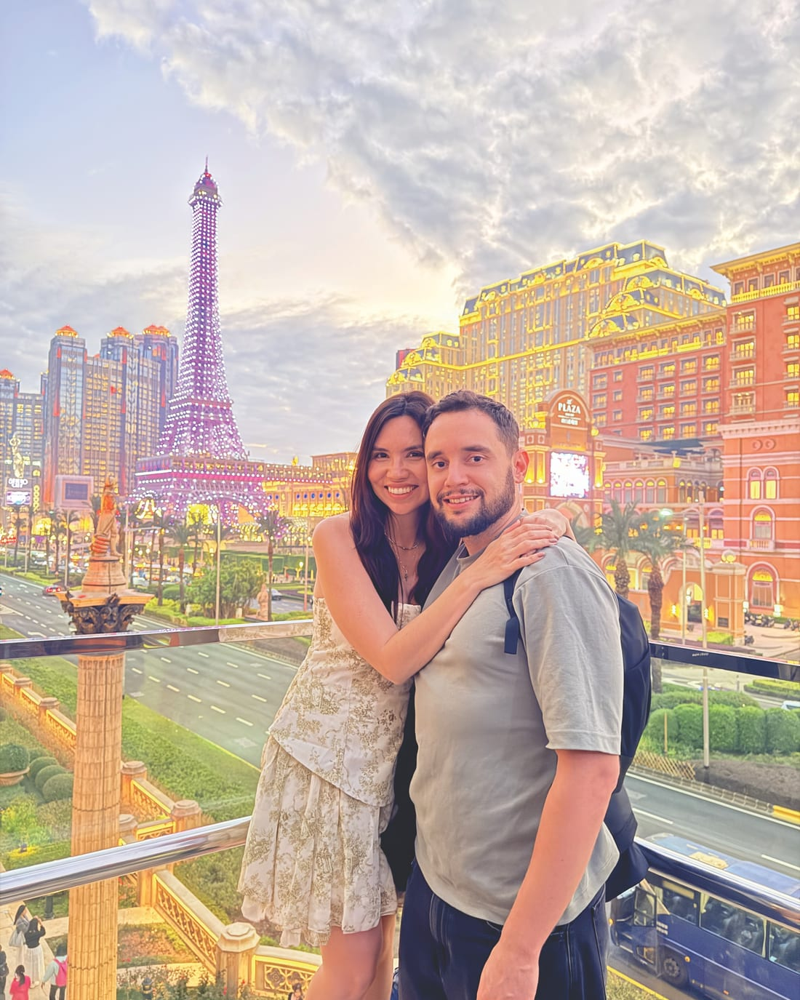

Viajes de Autor: recorre Asia con nosotros
Nuestras rutas estrella. Te acompañamos en persona para vivir Asia desde adentro, cuidando cada detalle.
Boutique · máx. 12 personas
Sobre nosotros
Viajes guiados, asesorías y rutas a tu ritmo. Planificar un viaje a Asia parece fácil, hasta que te pones a hacerlo. Somos dos venezolanos viviendo en Vietnam y te guiamos en todo para que disfrutes sin estrés y en tu idioma.

Nuestra historia
Hace más de dos años decidimos hacer de Vietnam nuestro hogar. Cuando empezamos a buscar información en internet para venir a este lado del mundo, nos topamos con una pared: en español no había casi nada, y lo poco que encontrábamos estaba totalmente disperso, desactualizado y regado por mil páginas.
Armar el rompecabezas de transportes, visas y rutas nos tomó meses de frustración. Por eso creamos Asia Lo Posible. Nosotros ya hicimos el trabajo pesado por ti: compilamos, ordenamos y actualizamos toda la información real del terreno.
Queremos darte la guía amable y sencilla de entender que a nosotros nos hubiese encantado tener cuando empezamos, para que tú solo te preocupes por disfrutar.
Síguenos en @kathmolinaresEstilos de viaje
Cuatro maneras de vivir Asia con nosotros — desde acompañarte en persona hasta darte la ruta lista para que viajes a tu aire.
Nuestras rutas estrella. Te acompañamos en persona para vivir Asia desde adentro, cuidando cada detalle.
Boutique · máx. 12 personasViaja acompañado por coordinadores y guías de total confianza que hablan tu idioma. Tú solo disfruta; nosotros coordinamos desde aquí.
Boutique · máx. 12 personasTómate un café virtual con nosotros. Resolvemos tus dudas, revisamos tus miedos y ordenamos tu ruta para cualquier país del Sudeste Asiático, Corea y Japón: visados, itinerario, formas de pago y más.
Asesoría onlineRutas optimizadas paso a paso, basadas en nuestra experiencia real viviendo aquí. Olvídate de perder el tiempo investigando en blogs.
Rutas autoguiadasPor qué con nosotros
Lo que nadie te cuenta — y en lo que te ahorramos tiempo, dinero y dolores de cabeza.
Deja de saltar de blog en blog y de armar itinerarios imposibles. Nosotros ya hicimos el trabajo pesado por ti.
En internet todo cambia muy rápido: líneas de bus que ya no existen, templos en renovación, nuevas visas. Viviendo aquí, sabemos qué funciona hoy, no hace tres años.
Las apps locales a veces no aceptan tarjetas extranjeras y los horarios cambian sin aviso. Te decimos exactamente cómo moverte sin quedar varado.
Un hotel puede verse idílico en Booking pero estar en una zona ruidosa o incomunicada. Te aseguramos que donde te hospedes sea cómodo y seguro.
Pedir comida es fácil; resolver un malentendido en la estación o explicar una alergia médica es otra historia. Te damos el respaldo de guías que hablan tu idioma.
Te enseñamos a esquivar los cobros excesivos en taxis, mercados y agencias locales. Viajarás pagando lo justo.
Te decimos qué atracciones realmente valen la pena y cuáles son solo una trampa para turistas que te hará perder el día.
Te enseñamos a disfrutar la verdadera gastronomía asiática donde comen los locales, cuidando tu salud.
Agenda